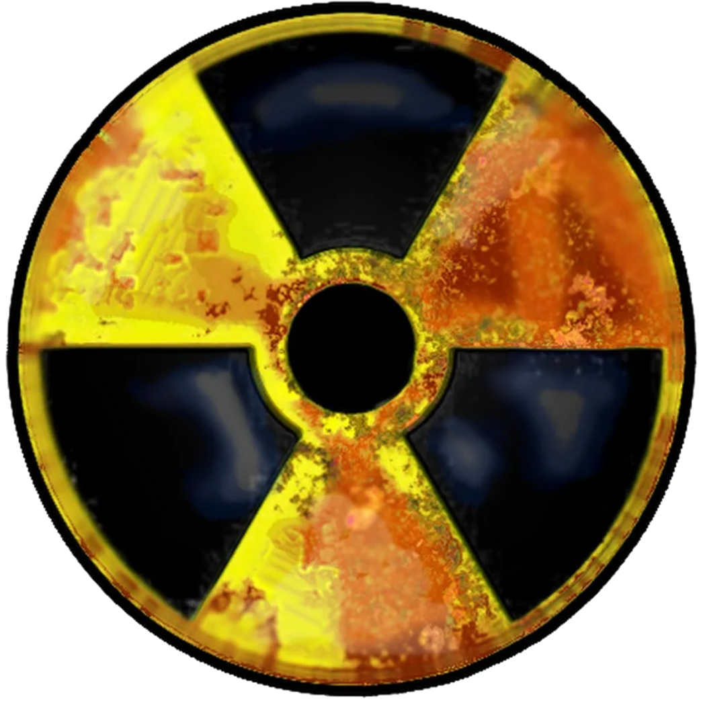
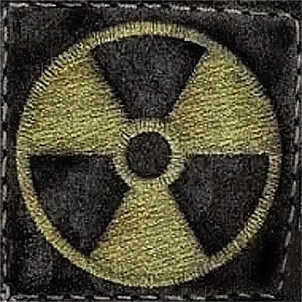

S.T.A.L.K.E.R. Clear Sky
Описание
2011 год. Пять лет прошло с момента Второй катастрофы, затмившей события апреля 1986 года. Зону терзают участившиеся выбросы, смещая аномальные поля и открывая дороги к ранее недоступным местам. Кланы сражаются за новые территории и ключевые позиции. Сталкеры гибнут, но вслед за ними приходят другие. Действие игры происходит за год до событий, описанных в "S.T.A.L.K.E.R.: Shadow of Chernobyl". За год до самого удачного похода Стрелка к центру Зоны – третьего по счету. Мы узнаем о нем и его группе с новой стороны – взглянув на него глазами другого героя.
Информация
Оценка пользователей - 4,5 ⭐.
Разработчик - CalMorGames.
Правооблодатель - GSC Game World.
Издательство - SN World Publishing.
Платформа - Android.
Размер файла: 271 Мб.
Формат файла: [*Apk].
Версия билда: 0.0.3.
Последнее обновление: 06.05.2020.
Что нового в билде?
1. Исправлено управление.
2. Главный Герой больше не падает за текстуры.
3. Небольшая оптимизация.
4. Новые элементы управления.
5. Выбор стиля главного меню.
6. Загрузочные экраны локации.
7. Эмбиент на локациях.
8. Фонарик.
9. Стартовый ролик.
10. Небо.
11. Небольшой туман.
12. Новая стартовая локация "Болота".
13. Звуки шагов Главного Героя.
14. Улучшена графика.
15. Миникарта теперь поворачивается.
16. Дальность прорисовки была увеличена.

———————————————————————————————————————————————
S.T.A.L.K.E.R. Shadow of Chernobyl

Описание
2012 год. Шесть лет прошло с момента Второй катастрофы, затмившей события апреля 1986 года. Действие игры происходит в Чернобыльской зоне отчуждения, превратившейся из места, где ломались судьбы, в угрозу всему человечеству. Свои тайны Зона раскрывает неохотно, через силу, и редкий герой сможет добраться до самого ее сердца и узнать – какая опасность поджидает его там? Опасность, по сравнению с которой мародеры и вражеские группировки, все монстры и аномалии Зоны покажутся лишь подготовкой к встрече с чем-то более фатальным и пугающим. А пока... Готовься, герой. Собирай артефакты и торгуй, прощупывай дорогу и проверяй тылы, хватай рентгены и сражайся – но только выживи! И тогда, быть может, если будешь настойчив и особо везуч, ты узнаешь – почему все это свалилось на тебя.
Информация
Оценка пользователей - 4,5 ⭐.
Разработчик - NGAME.
Правооблодатель - GSC Game World.
Издательство - SN World Publishing.
Платформа - Android.
Размер файла: 223 Мб.
Формат файла: [*Apk].
Версия билда: 0.0.5. Test AI.
Последнее обновление: 31.07.2020.
Что нового в билде?
1. Новая система ИИ.
2. Торговля.
3. Изменён интерфейс.
4. Расширенные настройки, такие как: Автострельба, изменение прозрачности кнопок, динамическое освещение.
5. Расширена система оружия.

———————————————————————————————————————————————
S.T.A.L.K.E.R. Call of Pripyat
Описание
Узнав об открытии дороги к центру Зоны, правительство решает провести крупномасштабную военную операцию по взятию ЧАЭС под свой контроль. Операция получает кодовое название "Фарватер". Согласно плану этой операции, первая группа военных должна направиться для воздушной разведки территории, чтобы впоследствии составить детальные планы расположения аномальных полей. Затем по отмеченным безопасным проходам выдвинутся основные силы военных. Несмотря на тщательную подготовку, операция терпит фиаско. Большинство вертолетов из ударной группы разбивается. С целью сбора информации о причинах провала операции, Служба безопасности Украины направляет своего агента в центр Зоны. Дальше все зависит от игрока..
Информация
Оценка пользователей - 4,5 ⭐.
Разработчик - RedParallax.
Правооблодатель - GSC Game World.
Издательство - SN World Publishing.
Платформа - Android.
Размер файла: 429 Мб.
Формат файла: [*Apk].
Версия билда: 0.06.
Последнее обновление: 22.05.2020.
Что нового в билде?
1. Оружие: Полностью переделан скрипт стрельбы, Добавлены Нож и дробовики, Вылет гильз при стрельбе, Разброс при стрельбе отрегулирован более точно, Прицел, который изменяем степень разброса, Руки при ходьбе, теперь имеют анимацию, Селектор.
2. Погода: Плавная система смены скайбокса, Плавная смена солнечного освещения, В имбиент добавлены фоновые звуки.
3. Переписан контролем игрока.
4. Добавлена система жизни и энергии (стамина): Появилась возможность траты энергии и потеря жизни при получении урона, Работают кнопки быстрого использования.
5. Появилась аномалия "Жарка".
6. Осмотр всех вертолетов на Затоне.
7. Система инвентаря (не доведено до ума).
8. Наброски ПДА (не доведено до ума).
9. 3д текстуры (бампы).
10. Оптимизация.
11. Настройки (не все, только базовые (звук, разрешение, качество графики, чувствительность, дальность прорисовки)).
12. При подходе к NPC на Скадовске проигрываются реплики (приветствия и прощания).

———————————————————————————————————————————————
Call of Zone

Описание
Call of Zone – ролевая игра, где вы будете исследовать Зону отчуждения. Главный герой - самый обычный сталкер, который решился вновь вернуться в Зону отчуждения, спустя несколько лет. Но переступив границу между обычным миром и Зоной, он неожиданно узнает о том, что в Зоне начинается крупномасштабная война всех её группировок. И не нужно быть предсказателем, что бы понимать какие итоги предрекает эта междоусобица всех сталкеров... На вашем пути буду стоять опасные мутанты, аномалии, вооружённые с ног до головы люди, которые готовы уничтожить все на своём пути ради своей цели - и всё это лишь половина того, что может вас ожидать! Постарайтесь остановить опасную для всех обитателей Зоны войну или же примите в ней участие, уничтожив всех своих врагов!
Информация
Оценка пользователей - 4,5 ⭐.
Разработчик - Art Of Sun.
Правооблодатель - Art Of Sun.
Издательство - SN World Publishing.
Платформа - Android.
Размер файла: 89 Мб.
Формат файла: [*Apk].
Версия билда: 1.5.4.
Последнее обновление: 11.02.2020.
Что нового в билде?
1. Исправлен баг с сюжетом.
2. Новый сюжет (также немного изменён старый).
3. Продажа оружия и брони.
4. Зоны радиации.
5. Ретекстур UI.

———————————————————————————————————————————————
S.T.A.L.K.E.R. Shadow of Chernobyl Mobile Edition
Описание
2012 год. Шесть лет прошло с момента Второй катастрофы, затмившей события апреля 1986 года. Действие игры происходит в Чернобыльской зоне отчуждения, превратившейся из места, где ломались судьбы, в угрозу всему человечеству. Свои тайны Зона раскрывает неохотно, через силу, и редкий герой сможет добраться до самого ее сердца и узнать – какая опасность поджидает его там? Опасность, по сравнению с которой мародеры и вражеские группировки, все монстры и аномалии Зоны покажутся лишь подготовкой к встрече с чем-то более фатальным и пугающим. А пока... Готовься, герой. Собирай артефакты и торгуй, прощупывай дорогу и проверяй тылы, хватай рентгены и сражайся – но только выживи! И тогда, быть может, если будешь настойчив и особо везуч, ты узнаешь – почему все это свалилось на тебя.
Информация
Оценка пользователей - 4,5 ⭐.
Разработчик - S.T.A.L.K.E.R. Mobile Edition.
Правооблодатель - GSC Game World.
Издательство - SN World Publishing.
Платформа - Android.
Размер файла: 570 Мб.
Формат файла: [*Apk].
Версия бенчмарка: 0.3.
Последнее обновление: 17.07.2020.
Что нового в бенчмарке?
1. Добавлены 2 локации.
2. Уровень графики понижен до низких (не минимальных) настроек.